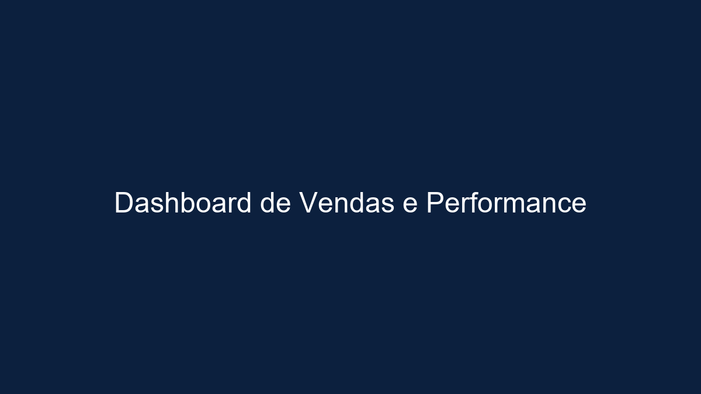
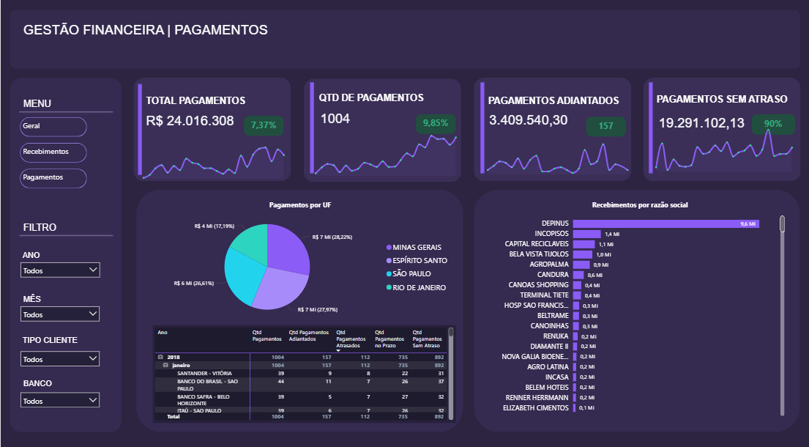
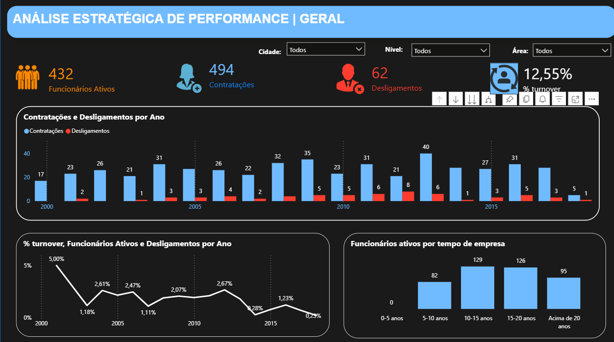

Performance Comercial e Indicadores de Vendas
Dashboard com análise de receita, ticket médio, crescimento, ranking comercial e evolução mensal para apoio à performance da área de vendas.
Ver dashboard onlineDesenvolvo dashboards executivos, análises de performance e indicadores de negócio com foco em clareza visual, tomada de decisão e impacto real para áreas como financeiro, vendas, operações e RH.
Atuo com análise de dados e desenvolvimento de dashboards em Power BI, com foco em transformar dados brutos em indicadores claros, acionáveis e relevantes para o negócio.
Meu trabalho combina organização visual, raciocínio analítico e visão executiva, buscando sempre responder perguntas reais de negócio com dashboards que apoiam decisão.
Entendimento do problema, da área e das decisões que o dashboard precisa apoiar.
Organização, limpeza e modelagem para garantir leitura confiável e escalável.
Escolha de indicadores que realmente ajudem a acompanhar desempenho e resultado.
Construção de dashboards claros, elegantes e orientados para decisão executiva.

Dashboard com análise de receita, ticket médio, crescimento, ranking comercial e evolução mensal para apoio à performance da área de vendas.
Ver dashboard online
Dashboard construído para acompanhar fluxo de caixa, despesas, metas e indicadores financeiros, facilitando leitura executiva e tomada de decisão.
Ver dashboard online
Painel interativo com leitura analítica de indicadores, tendências e desempenho, apoiando o acompanhamento gerencial e a tomada de decisão.
Ver dashboard online